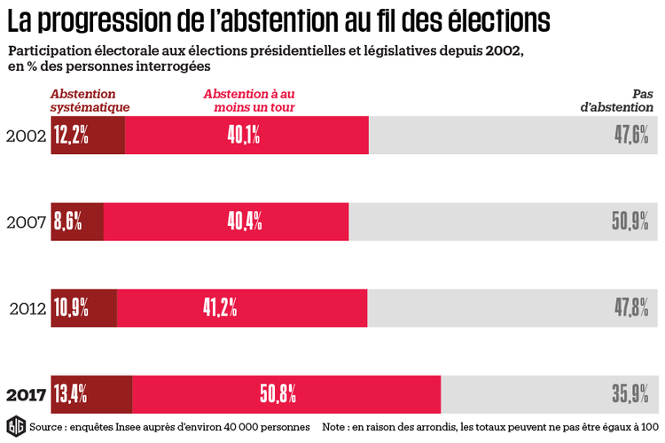

The areas of concern
The public sphere, in the Arrendtian sense, is agitated by the many issues we have illustrated above. In this public dimension, voting is the queen form of expression: it allows the greatest number of people to be consulted at the least effort.
Voting in the public sphere raises questions about representativeness in terms of decision-making, the physical availability of voters, the transparency of the democratic process, integrity and traceability.
Many voting implementations are related within public institutions, associations, companies whose management is collaborative. As a result, the responses to these needs may be similar or even similar.
For example, participation in national elections in France is declining from year to year:
 >
Abstentions in France since 2002, source INSEE
The blockchain, because it partially eliminates the need for trust, could reassure the general public in its act of participation and could constitute an engine for its re-engagement.
The different forms of voting in the public sphere:
Voting on boards of directors:
Their field of competence is the administration of institutions, associations, companies or a public establishment.
The organisation, functioning and prerogatives of the Board of Directors are laid down by the Statute of the institution and depend on company law. (Art. L.225-36-1 C. com.).
In general, the Articles of Association provide for the frequency of meetings and the procedures for convening directors.
In theory, a board of directors should meet whenever the company's situation so requires. However, the holding of this one is de facto conditioned on the physical availability of the stakeholders.
Decisions are taken by vote within a board of directors, usually by show of hands. This implies trust in the honest process, traceability being ensured only by the trusted third party who reports it.
The participation of the legal entity in the board of directors: If a legal entity is a member of a board of directors, it shall appoint a natural person to represent it. From the delegation of this vote comes a doubt: the delegate is in the position to exceed or exceed the prior choices of the delegator(s).
The employee's integration: The draft law on the growth of companies, known as the Pact law, provides for strengthening the presence of employee representatives on boards of directors (Draft law PACTE article 62, paragraph II).
This bill introduces greater employee participation as a vehicle for economic growth according to the Impact Assessment Report on the draft law on business growth and transformation.
Voting in the public consultation
In the context of the petition: The petition consists of supporting a cause by ratifying it. Although it does not belong directly to the vote, it shares many attributes with the vote that make it possible to deal with both subjects together without losing relevance.
In the context of the administration of the public good: The transparent administration of the public good has been a major concern in recent years. It arises at two levels; the first concerns decision-making and involves consultation. The second involves the ongoing management of the property and its governance. There are many public goods and the proposals concerning them can come from citizens but also from institutions.
Voting in collaborative management:
Co-management with users: Crowdfunding refers to all financial transaction tools and methods that involve a large number of people to finance a project. The expressions of support from users of these tools are of two types: financial support, which consists of a transaction whose amount represents a percentage of an objective, and the transaction act, which represents support as such. The amount of the transaction represents only one scale of support.
The specific needs of associations:
Associations can use public consultation by voting in several cases:
- Choice of associative projects
- Allocation of budgets
- Appointment of directors
Determination of business processes
The action of the associations is subject to the trust of its donors. Many scandals have illustrated that this trust is sometimes abused, leading at best to a lack of interest in the cause defended, at worst to a media lynching that permanently discredits the actions undertaken.
The promises of the blockchain:
The use of blockchain in these voting decision-making methods would allow:
- Greater representativeness through the integration of a large number of actors (within the limits of the permitted scale).
- An independence as to the physical availability of voters. Particularly advantageous in the context of international or fragmented organizations.
- Integrity of the decision, through processes to fight against falsification.
- Traceability of the data.
- Transparency of decisions and processes.
In summary
| Actor / Form of vote present | Board of Directors | Participative Management | Public consultation | Election of directors and representatives |
|---|---|---|---|---|
| Institution | ||||
| Association | ||||
| Company | ||||
| Public institutions | ||||
| Public in general |
Summary table of the forms of voting present within an actor.